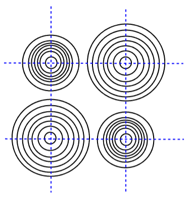
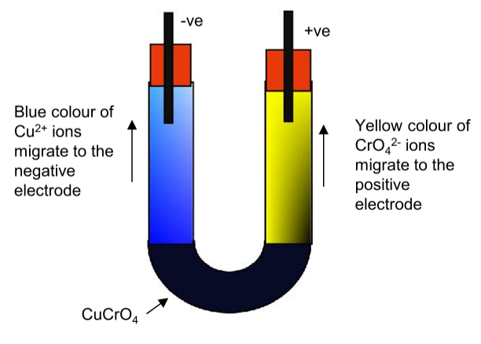
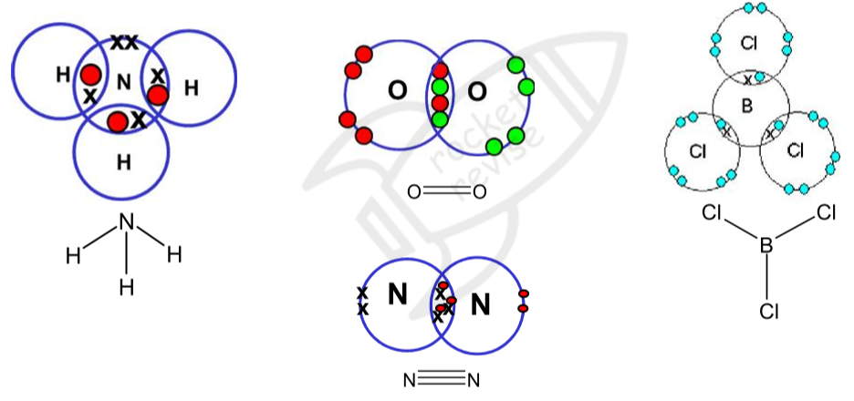
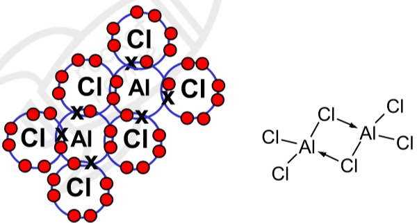
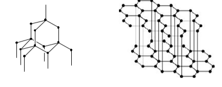

Bonding and structure
Every chemical bond is an electrostatic attraction between positive and negative charges. What differs is where the charges are: between ions, between nuclei and shared electrons, or between metal ions and a sea of electrons. This topic explains each type of bond, the shapes that molecules take, how bonds become polar, and how the structure of a substance explains its melting temperature, conductivity and solubility.
1. Ionic bonding
When a metal reacts with a non-metal, electrons are transferred. The metal atoms lose their outer electrons to become positive ions, and the non-metal atoms gain electrons to become negative ions. In simple cases each ion ends up with the electron configuration of a noble gas: sodium (2,8,1) becomes Na+ (2,8) and chlorine (2,8,7) becomes Cl− (2,8,8). In terms of sub-shells, Mg 1s2 2s2 2p6 3s2 becomes Mg2+ 1s2 2s2 2p6, and O 1s2 2s2 2p4 becomes O2− 1s2 2s2 2p6.
Ionic bonding is the strong electrostatic attraction between oppositely charged ions.
The attraction acts equally in every direction, so each ion attracts as many oppositely charged ions as can pack around it. The result is a giant ionic lattice, a regular repeating arrangement of a huge number of ions. In sodium chloride every Na+ is surrounded by six Cl− ions and every Cl− by six Na+ ions. The formula NaCl gives only the ratio of ions; there are no molecules.
What makes ionic bonding stronger
The attraction between two ions is greater when their charges are larger and when their centres are closer together, which happens when the ions are smaller. Stronger attraction means more energy is needed to separate the ions, so the melting temperature is higher.
| Compound | Ions | Melting temperature / °C | Why |
|---|---|---|---|
| NaF | Na+, F− | 993 | Same charges; the halide ion gets bigger from F− to I−, so the ions are further apart and the attraction weaker. |
| NaCl | Na+, Cl− | 801 | |
| NaBr | Na+, Br− | 747 | |
| NaI | Na+, I− | 661 | |
| MgO | Mg2+, O2− | 2852 | Both ions are doubly charged, and Mg2+ is smaller than Na+, so the attraction is much stronger than in NaCl. |
Ionic radii
- Positive ions are smaller than their atoms. The atom loses its whole outer shell, and the same number of protons now pulls on fewer electrons, so they are held closer.
- Negative ions are larger than their atoms. The extra electrons repel the others, and the same nuclear charge is shared among more electrons, so the attraction per electron is less.
- Down a group, ionic radius increases, because each ion has one more shell of electrons.
- Isoelectronic ions (with the same number of electrons) get smaller as the number of protons increases.
Evidence that ions exist
Electron density maps. When X-rays pass through a crystal they are scattered by the electrons, and the pattern can be turned into a map of electron density, drawn with contour lines like a map of hills. For sodium chloride the map shows separate, almost spherical regions of electron density, arranged regularly, with the density falling almost to zero between neighbouring ions. That is what separate ions would look like. The chloride ions appear larger than the sodium ions. The map does not show a sharp edge to each ion, so ionic radii cannot be read exactly from it.

Migration of ions. If ions exist, a potential difference should move them: positive ions towards the negative electrode, negative ions towards the positive one. Green copper(II) chromate(VI) solution placed under a colourless electrolyte in a U-tube shows this. After some time a blue colour (Cu2+ ions) rises towards the negative electrode and a yellow colour (CrO42− ions) towards the positive electrode. Similarly, a crystal of potassium manganate(VII) on filter paper moistened with an electrolyte, connected to a low-voltage d.c. supply, gives a purple streak that moves towards the positive electrode, because the coloured particle is the negative MnO4− ion.

Properties of ionic compounds
- High melting and boiling temperatures: melting means overcoming strong electrostatic attractions between many ions throughout the giant lattice, which needs a lot of energy.
- Conduct electricity when molten or dissolved, but not when solid: the ions carry the charge. In the solid they are held in fixed positions; when the lattice breaks down on melting or dissolving, they are free to move.
- Often soluble in water: polar water molecules are attracted to the ions and pull them out of the lattice (the details come later in the course).
- Hard but brittle: a sharp blow can shift one layer of ions relative to the next. Ions of the same charge then line up next to each other, they repel, and the crystal splits apart.
2. Covalent bonding
A covalent bond is the strong electrostatic attraction between a shared pair of electrons and the nuclei of the two bonded atoms.
Covalent bonds form between non-metal atoms. Electron density maps of molecules such as H2 show a high concentration of electron density between the two nuclei. That negative charge is attracted to both positive nuclei, holding them together, and these attractions outweigh the repulsion between the two nuclei. Each atom usually gains a share of enough electrons to fill its outer shell.
Atoms can share more than one pair. Oxygen, O=O, has a double bond (two shared pairs), and nitrogen, N≡N, has a triple bond (three shared pairs). The bond is strong: it takes a lot of energy to break, which is why giant covalent structures such as diamond have such high melting temperatures. The forces between separate molecules are a different and much weaker thing.

Not every atom ends up with eight outer electrons. Boron in BF3 and BCl3 has only six, which is why these molecules readily accept a lone pair. Elements in period 3 and below can share more than eight: phosphorus in PCl5 has ten outer electrons and sulfur in SF6 has twelve.
Bond length and bond strength
The bond length is the distance between the two nuclei. At that distance the attraction of both nuclei for the shared electrons exactly balances the repulsion between the two nuclei (and between the inner electrons). A double or triple bond puts more electron density between the nuclei, so the attraction is greater: the nuclei are pulled closer together and the bond is harder to break.
| Bond | Shared pairs | Bond length / nm | Mean bond enthalpy / kJ mol−1 |
|---|---|---|---|
| C–C | 1 | 0.154 | 347 |
| C=C | 2 | 0.134 | 612 |
| C≡C | 3 | 0.120 | 838 |
More shared pairs between two atoms means more electron density between the nuclei, a stronger attraction, a shorter bond and a stronger bond. Note that a double bond is not twice as strong as a single bond.
Dative covalent (coordinate) bonds
In a dative covalent bond both electrons of the shared pair come from the same atom. It needs one atom with a lone pair and another with an empty space in its outer shell. In a displayed formula it is drawn as an arrow pointing from the atom that donates the lone pair to the atom that accepts it. Once formed, a dative bond is identical to any other covalent bond.
- Ammonium ion, NH4+: NH3 + H+ → NH4+. The nitrogen's lone pair bonds to an H+ ion, which has no electrons. All four N–H bonds are then the same, and the ion is tetrahedral.
- Oxonium ion, H3O+: H2O + H+ → H3O+. One of oxygen's two lone pairs forms the bond, so one lone pair is left.
- NH3BF3: the lone pair on the nitrogen of NH3 fills the gap in the outer shell of boron in BF3, written H3N→BF3.
- Aluminium chloride, Al2Cl6: at lower temperatures, two AlCl3 molecules join. A lone pair on a chlorine of each molecule forms a dative bond to the aluminium of the other, giving each aluminium four bonding pairs.

3. Shapes of molecules and ions
The shape of a molecule is set by the electron pairs in the outer shell of its central atom. Pairs of electrons are regions of negative charge, so they repel one another and move as far apart as possible. This is electron-pair repulsion theory. Count the pairs and you know their arrangement; then the positions of the atoms give the shape.
- Lone pairs repel more strongly than bonding pairs. A lone pair is held by only one nucleus, so it sits closer to the central atom and spreads out more. The order of repulsion is lone pair–lone pair > lone pair–bonding pair > bonding pair–bonding pair.
- Each lone pair squeezes the bond angles by roughly 2.5°: 109.5° in CH4, 107° in NH3 and 104.5° in H2O.
- A double or triple bond counts as one bonding region, because its electrons all point in the same direction. CO2 has two bonding regions around carbon, so it is linear; each carbon in ethene, C2H4, has three, so the H–C–H angles are 120°.
- The shape is named from the atoms only, even though the lone pairs help to decide it. Ammonia has four pairs arranged tetrahedrally, but its shape is pyramidal.
| Bonding pairs | Lone pairs | Shape | Bond angle | Examples |
|---|---|---|---|---|
| 2 | 0 | linear | 180° | BeCl2, CO2, HCN |
| 3 | 0 | trigonal planar | 120° | BF3, AlCl3, SO3, NO3−, CO32− |
| 4 | 0 | tetrahedral | 109.5° | CH4, SiCl4, NH4+, SO42− |
| 3 | 1 | trigonal pyramidal | 107° | NH3, PCl3, H3O+ |
| 2 | 2 | bent (V-shaped) | 104.5° | H2O, OF2 |
| 5 | 0 | trigonal bipyramidal | 120° and 90° | PCl5 (gas), PF5 |
| 6 | 0 | octahedral | 90° | SF6 |
| 4 | 2 | square planar | 90° | XeF4 |
With five or six pairs, lone pairs take the positions that keep them furthest from other pairs. That gives a few more shapes you can work out without needing to learn their names: ClF3 (3 bonding, 2 lone) is T-shaped, SF4 (4 bonding, 1 lone) is a distorted tetrahedron, XeF2 and I3− (2 bonding, 3 lone) are linear, and BrF5 (5 bonding, 1 lone) is square pyramidal.
Nitrogen has five outer electrons. Three are shared with the three hydrogen atoms, which leaves one lone pair. So there are 3 bonding pairs and 1 lone pair.
The four electron pairs repel each other and move as far apart as possible, into a tetrahedral arrangement.
The lone pair repels more strongly than the bonding pairs, so it pushes the N–H bonds slightly closer together.
The shape is trigonal pyramidal and the H–N–H bond angle is 107°, smaller than the 109.5° of a regular tetrahedron.
Exam answers need all of these: the number of each kind of pair, that pairs repel to get as far apart as possible, that lone pairs repel more (or, with no lone pairs, that the pairs repel equally), and then the name of the shape and the angle.
Start with the central atom's outer electrons: oxygen has 6.
Add one electron for each atom bonded by a single bond (3 H), then adjust for the charge: a 1+ charge means one electron fewer. \( 6 + 3 - 1 = 8 \) electrons, which is 4 pairs.
Three pairs bond to H atoms, so there are 3 bonding pairs and 1 lone pair: the same as ammonia.
H3O+ is trigonal pyramidal, with bond angles of about 107°.
Xenon has 8 outer electrons, and the four fluorine atoms add one each: \( 8 + 4 = 12 \) electrons, so 6 pairs.
Four pairs bond to F atoms, leaving 2 lone pairs. Six pairs point to the corners of an octahedron.
The two lone pairs repel each other most, so they take opposite positions, 180° apart, above and below the plane.
The four F atoms lie in a flat square around Xe: the shape is square planar and the F–Xe–F bond angle is 90°.
4. Electronegativity and polarity
Electronegativity is the ability of an atom to attract the bonding pair of electrons in a covalent bond towards itself.
Electronegativity is measured on the Pauling scale. Fluorine is the most electronegative element, with a value of 4.0, followed by oxygen, nitrogen and chlorine.
- It increases across a period: the nuclear charge increases while the bonding electrons stay in the same shell with similar shielding, and the atoms get smaller, so the bonding pair is pulled in more strongly.
- It decreases down a group: the bonding pair is further from the nucleus and more shielded by inner shells.
| Element | H | C | N | O | F | Na | Mg | Al | Si | P | S | Cl | Br | I |
|---|---|---|---|---|---|---|---|---|---|---|---|---|---|---|
| Pauling value | 2.1 | 2.5 | 3.0 | 3.5 | 4.0 | 0.9 | 1.2 | 1.5 | 1.8 | 2.1 | 2.5 | 3.0 | 2.8 | 2.5 |
Polar bonds and the bonding continuum
When two identical atoms are bonded, as in H2 or Cl2, the electrons are shared equally and the bond is non-polar. When the atoms have different electronegativities, the bonding pair is pulled towards the more electronegative atom. That atom gains a small negative charge, δ−, and the other is left with a small positive charge, δ+. The bond is a polar covalent bond and has a permanent dipole: in hydrogen chloride, Hδ+–Clδ−.
Pure covalent and pure ionic bonding are the two ends of a continuous scale. The bigger the difference in electronegativity, the more uneven the sharing. A small difference gives a slightly polar bond, and a very large difference (more than about 1.7) means the electron is effectively transferred and the bonding is mainly ionic. Most real compounds lie somewhere in between. Ionic compounds can also have some covalent character: a small, highly charged positive ion can distort, or polarise, the electron cloud of a large negative ion, pulling electron density into the space between them.
Polar and non-polar molecules
A molecule with polar bonds is not necessarily polar overall. Each bond dipole has a direction, and if the molecule is symmetrical the dipoles cancel out. CO2 is linear, so its two C=O dipoles point in opposite directions and cancel; BF3 (trigonal planar) and CCl4 (tetrahedral) cancel in the same way, so these molecules are non-polar. Water is bent, so its two O–H dipoles add up to give a polar molecule with δ− on the oxygen side. Replacing one Cl in CCl4 by H gives CHCl3, which is no longer symmetrical and is polar.
A molecule is polar when it has polar bonds and a shape in which their dipoles do not cancel. Symmetrical molecules with identical bonds and no lone pairs on the central atom are non-polar, even if every bond is polar.
A simple test: run a thin jet of a liquid from a burette past an electrically charged rod. A jet of a polar liquid such as water bends towards the rod, because the molecules turn so that their oppositely charged ends face it. This happens whether the rod is positive or negative. A jet of a non-polar liquid such as cyclohexane or tetrachloromethane is not deflected. The more polar the molecules, the greater the deflection.
5. Metallic bonding
Metallic bonding is the strong electrostatic attraction between metal cations and a sea of delocalised electrons.
In a solid metal, each atom releases its outer electrons into a shared "sea" that is spread through the whole structure. These electrons are delocalised: they do not belong to any one atom. What is left is a regular, closely packed lattice of positive ions held together by their attraction to the delocalised electrons. This is a giant metallic lattice.
Metallic bonding is stronger when there are more delocalised electrons per atom, when the ions have a greater charge, and when the ions are smaller. Magnesium has a higher melting temperature (650 °C) than sodium (98 °C): each Mg atom gives two electrons to the sea and forms a smaller 2+ ion, while Na gives one electron and forms a larger 1+ ion.
- High melting temperatures: lots of energy is needed to overcome the strong attraction between the ions and the delocalised electrons.
- Good electrical conductors, as solids and liquids: the delocalised electrons can move through the structure when a potential difference is applied.
- Good thermal conductors: the mobile electrons carry kinetic energy quickly through the metal.
- Malleable and ductile: all the ions are the same, so when a force makes layers of ions slide over each other, the surroundings of every ion stay the same and the bonding is not broken. The metal changes shape instead of shattering.
6. Giant covalent structures
In a giant covalent (macromolecular) lattice, every atom is joined to its neighbours by strong covalent bonds in a network that runs through the whole crystal. To melt it, many of these bonds must be broken, so the melting temperatures are very high. These substances are insoluble in water, because water molecules cannot provide the energy needed to break covalent bonds.

| Structure | Bonding | Properties and why |
|---|---|---|
| Diamond | Each C forms four covalent bonds in a tetrahedral network. | Very high melting temperature and extremely hard, because the rigid network of strong bonds runs in all directions. Does not conduct: all four outer electrons of each carbon are held in bonds, so none are free to move. |
| Graphite | Each C forms three covalent bonds in flat layers of hexagons. The fourth outer electron is delocalised over the layer. | Very high melting temperature (strong bonds within the layers). Conducts along the layers, because the delocalised electrons move freely within a layer, but not well across them. Soft and slippery: the layers are held together only by weak London forces, so they slide over each other easily. |
| Graphene | A single layer of graphite, one atom thick. | Extremely strong for its mass, because of the network of strong covalent bonds. Conducts electricity very well across the sheet, because one electron per carbon is delocalised. Almost transparent. |
| Carbon nanotubes | A sheet of graphene rolled into a tube a few nanometres wide. | Very high tensile strength and conduct electricity along the tube, for the same reasons as graphene. Possible uses include strengthening materials, electronics, and carrying drug molecules into cells. |
| Fullerenes (e.g. C60) | Separate ball-shaped molecules of 60 carbon atoms, with delocalised electrons. | A simple molecular substance: only weak London forces act between the molecules, so it turns to vapour at a far lower temperature than diamond or graphite and dissolves in some organic solvents. |
| Silicon(IV) oxide, SiO2 | Each Si is bonded to four O atoms and each O to two Si atoms in a tetrahedral network. | Very high melting temperature (about 1700 °C), hard, insoluble, and does not conduct, for the same reasons as diamond. |
7. Simple molecular structures
Most covalent substances are made of separate small molecules. The bonds inside each molecule are strong, but the forces between molecules (London forces, permanent dipole forces and hydrogen bonds, covered in the topic on intermolecular forces) are weak. Melting or boiling only overcomes these intermolecular forces, not the covalent bonds, so simple molecular substances have low melting and boiling temperatures and many are gases or liquids at room temperature. They do not conduct electricity, because the molecules are neutral and no electrons are free to move.
- Iodine, I2: a solid in which I2 molecules are packed in a regular lattice, held only by London forces. It melts at 114 °C and gives a purple vapour when warmed.
- Ice, H2O: each water molecule forms two covalent O–H bonds and takes part in hydrogen bonds to its neighbours, with each oxygen surrounded tetrahedrally by four hydrogens. This open arrangement holds the molecules further apart than in liquid water, which is why ice is less dense than water and floats.
Only use the words "molecules" and "intermolecular forces" for simple molecular substances. Melting sodium chloride overcomes ionic bonds, melting a metal overcomes metallic bonding and melting diamond or silicon(IV) oxide breaks covalent bonds. Writing that "intermolecular forces break" when diamond melts loses the mark.
8. Structure, bonding and properties
| Property | Giant ionic | Simple molecular | Giant covalent | Giant metallic |
|---|---|---|---|---|
| Particles | positive and negative ions | small molecules | atoms | positive ions in a sea of delocalised electrons |
| What holds them | ionic bonds throughout the lattice | weak intermolecular forces between molecules | strong covalent bonds throughout | metallic bonding throughout |
| Melting temperature | high | low | very high | usually high |
| Conducts as a solid? | no: ions fixed | no | no (except graphite and graphene) | yes: delocalised electrons move |
| Conducts when molten? | yes: ions free to move | no | no | yes |
| Solubility in water | often soluble | usually insoluble or slightly soluble (some polar molecules dissolve) | insoluble | insoluble (some react) |
| Examples | NaCl, MgO | I2, ice, CO2, CH4 | diamond, graphite, SiO2, Si | Na, Mg, Cu |
A white solid melts at 1710 °C. It does not conduct electricity as a solid or when molten, and it does not dissolve in water. What type of structure does it have?
The very high melting temperature rules out a simple molecular structure: something strong holds every particle in place.
It does not conduct when molten, so it has no ions that become mobile on melting: it is not ionic. It does not conduct as a solid, so it is not a metal.
It must be giant covalent. (These are the properties of silicon(IV) oxide.)
Check conductivity in both states: solid only tells metal and graphite apart from the rest; molten tells ionic compounds apart from giant covalent ones.
Quick checks
What is the shape of a PCl3 molecule, and its approximate bond angle?
Phosphorus has 5 outer electrons; three bond to Cl, leaving one lone pair. Four pairs give a tetrahedral arrangement, and the lone pair squeezes the bonds to about 107°, so the shape is pyramidal. Trigonal planar would need three pairs and no lone pair, as in BCl3.
Why does magnesium oxide have a much higher melting temperature than sodium chloride?
Both compounds are giant ionic lattices. Doubly charged ions, closer together, attract each other much more strongly, so more energy is needed to separate them. MgO has no molecules, so "intermolecular forces" is wrong.
Which of these molecules is polar?
All four contain polar bonds, but in CO2, CCl4 and BF3 the symmetrical shape makes the bond dipoles cancel. In CHCl3 one position holds H instead of Cl, so the dipoles no longer cancel and the molecule is polar.
Which ion has the largest radius?
All four have 10 electrons. Oxide has the fewest protons (8), so its electrons are held least tightly and it is the biggest. Mg2+, with 12 protons, is the smallest.
Why does graphite conduct electricity but diamond does not?
Conduction needs mobile charged particles. Each carbon in graphite uses only three electrons in bonds, and the fourth is delocalised within its layer. Sliding layers explain why graphite is soft, not why it conducts. Graphite contains no ions.
The H–O–H bond angle in water is 104.5°, smaller than 109.5°. Why?
Oxygen has four electron pairs, arranged roughly tetrahedrally. Lone pairs repel more than bonding pairs, and two lone pairs squeeze the angle by about 5° from 109.5°. Electronegativity affects the polarity of the bonds, not the angle.
In the ammonium ion, NH4+, where do the two electrons of the dative bond come from?
An H+ ion has no electrons at all, so both electrons in the new bond come from nitrogen's lone pair. Once formed, the four N–H bonds are identical and the ion is tetrahedral.
A grey solid melts at 1083 °C, conducts electricity as a solid and when molten, and is insoluble in water. What is its structure?
Conducting as a solid points to delocalised electrons, and conducting when molten as well, with a high melting temperature, fits a metal (this is copper). An ionic solid does not conduct until it melts.